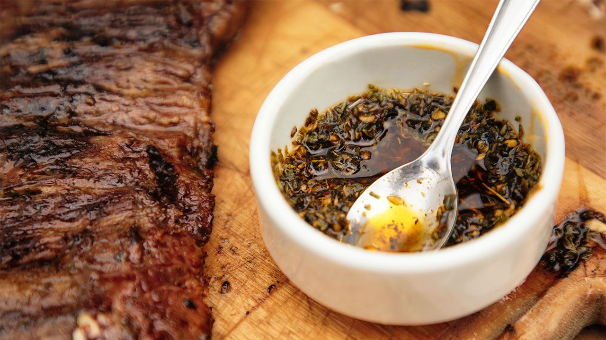

Chimichurri

El chimichurri es una tradicion que ha acompañado a la carne desde hace mucho tiempo.
El chimichurri es una salsa condimentada típica de Argentina, Uruguay, Paraguay y otros países latinoamericanos.
Muy utilizada para realzar el sabor de carnes asadas como las populares parrilladas argentinas de carne.
Los ingredientes principales del chimichurri son el ajo, perejil, aceite, ají, vinagre y sal. Pero puede contener más
especias secas como orégano, tomillo, comino, pimentón, mostaza en polvo... El punto picante se lo da el ají o la pimienta de Cayena,
dependiendo de la cantidad que se añada el chimichurri será más suave o fuerte. ¿El resultado? Un potente aderezo que realza sabores.
Receta
- 125ml AOV
- 125ml vinagre
- 4 dientes de ajo
- 2cda de oregano
- 1cda perejil picado
- 1cdta comino
- 1cda aji molido
- 1cda pimenton dulce
- 1cdta comino
- 1cdta tomillo
- En una sarten dora el oregano, comino, aji molido y tomillo con un poco de aceite sin llegar a
cocinar para que suelten el sabor y aroma.
- Pica los dientes de ajo.
- Pasa las especias calientes a un mortero, añade el pimenton y perejil picado
y machaca con el mortero.
- Una vez machacadas, añade el vinagre y el aceite. Agrega la sal y sigue machacando.
- Retira a un bol y añadir los dientes de ajo ṕicados.
- Ya tienes listo el chimichurri para usar en tus carnes asadas.